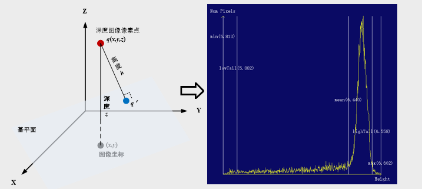
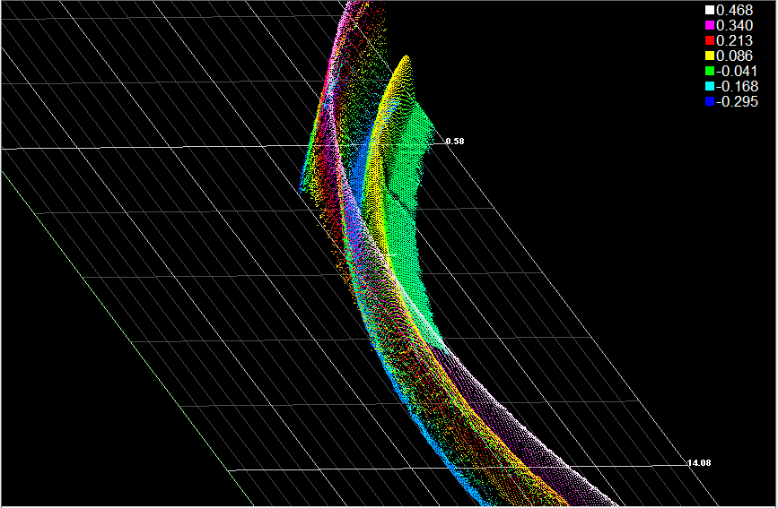
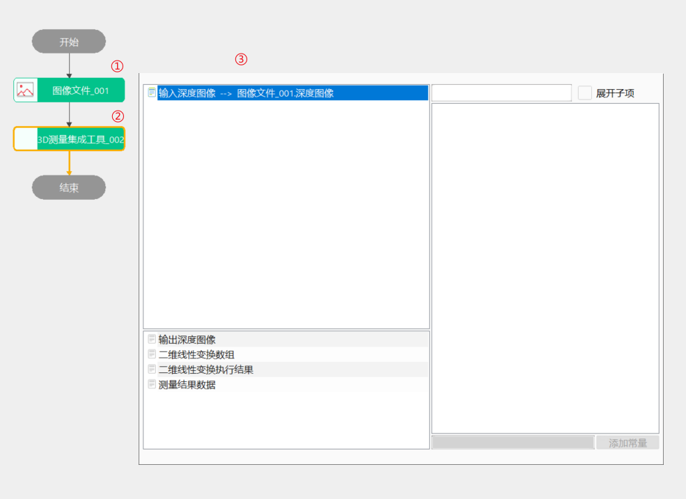
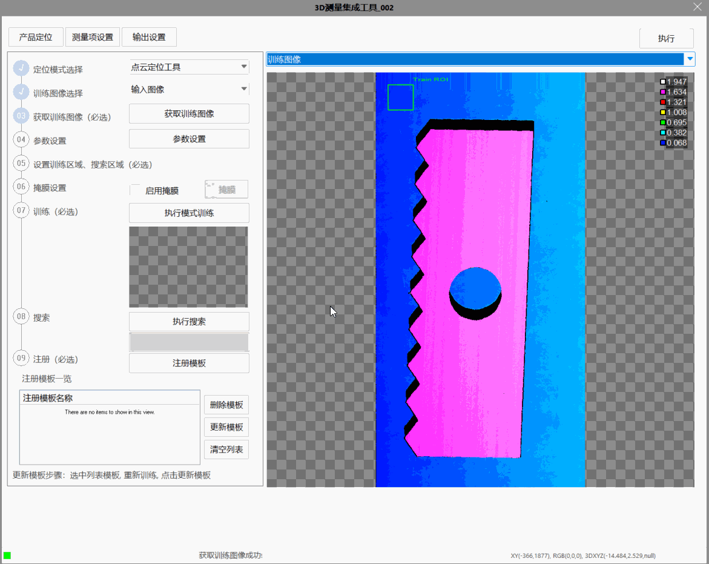
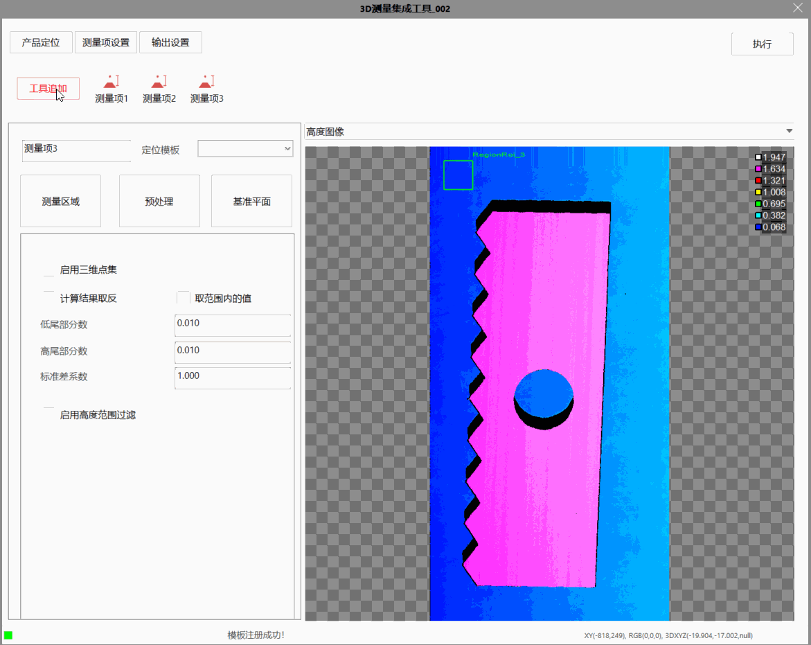
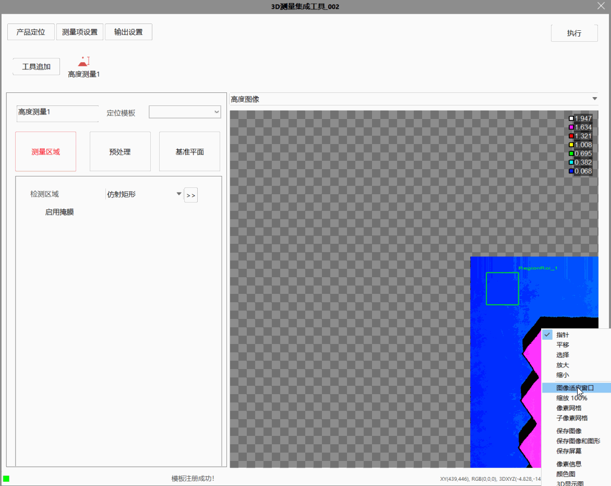
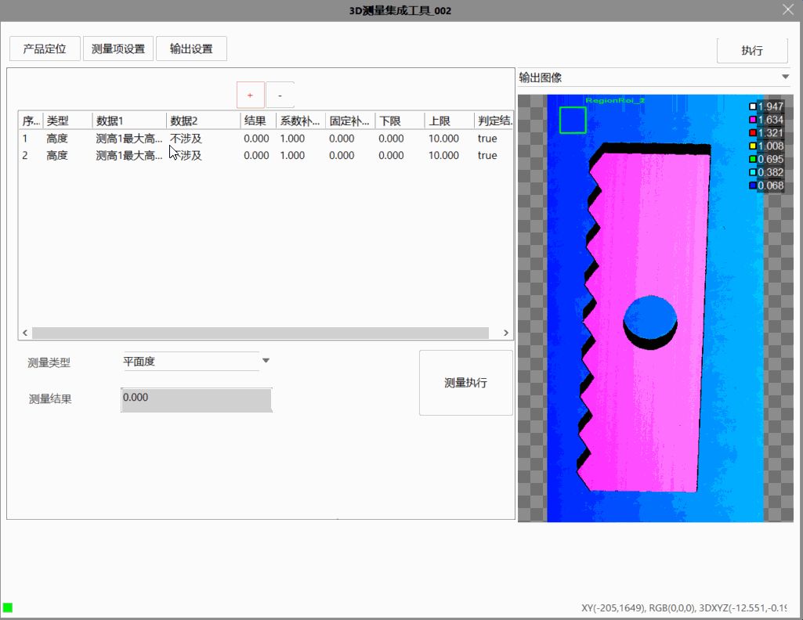

Công cụ tích hợp đo lường 3D cố định và tích hợp các quy trình như kiểm tra chiều cao, thiết lập tham số, hiển thị kết quả trong một phân đoạn ảnh đơn, bên trong tích hợp các chức năng công cụ như định vị đám mây điểm, tiền xử lý, fitting mặt phẳng có điểm ngoại lai, đo chiều cao, đo vị trí đám mây điểm, nhằm đơn giản hóa dự án kiểm tra, nâng cao hiệu suất debug và tăng khả năng mở rộng của dự án.
Các tình huống ứng dụng điển hình như：đo độ chênh cao của kết cấu, lấy khoảng cách chiều cao từ các điểm không gian ba chiều trong vùng quan tâm đến mặt phẳng chuẩn chỉ định, hoàn thành thống kê thông tin chiều cao. Thông thường cần chỉ định mặt phẳng chuẩn trước, cũng như tọa độ vị trí của các điểm không gian ba chiều trong vùng quan tâm；sau đó thông qua việc xem histogram chiều cao, tức thông tin thống kê mô tả phân bố dữ liệu chiều cao, bao gồm：histogram chiều cao, giá trị nhỏ nhất, giá trị lớn nhất, giá trị trung bình, trung vị, độ lệch chuẩn, phần đuôi thấp và phần đuôi cao, v.v. Điều chỉnh các tham số tương ứng để kết quả đo đáp ứng các yêu cầu căn chỉnh tại hiện trường như độ lặp lại, độ tương quan.




Quy trình thực thi công cụ：cấu hình đầu vào→thiết lập tham số→huấn luyện ảnh→thực thi tìm kiếm.
（1）Nhấp “Lấy ảnh huấn luyện”：cập nhật ảnh huấn luyện, sau khi nhấp sẽ hiển thị hộp thoại nhắc trước；
（2）Nhấp “Thực thi huấn luyện chế độ”：tiến hành huấn luyện；
（3）Trả về kết quả tìm kiếm tương ứng theo tham số tìm kiếm và tham số kết quả phán định đã thiết lập.
Template định vị của hạng mục đo là template đã đăng ký trong Step1 hoặc template lấy từ công cụ định vị bên ngoài；quá trình thêm hạng mục đo con như trong Hình 3_3；Hình 3_4 minh họa thao tác thiết lập tham số hạng mục con.


Chú ý：khi người dùng thiết lập tiền xử lý, khuyến nghị chọn công cụ tiền xử lý phù hợp theo tình trạng ảnh cụ thể, trong quá trình thiết lập tham số tiền xử lý sẽ thực thi theo thời gian thực và nhận được ảnh kết quả.
Thiết lập đầu ra thực hiện bằng cách lấy toàn bộ chiều cao lớn nhất, chiều cao nhỏ nhất và chiều cao trung bình của các hạng mục con thuộc hạng mục đo hiện tại, thêm vào danh sách tương ứng, sau đó lấy kết quả đo tương ứng thông qua ID, thông qua việc sửa đổi loại đo（có thể chọn chiều cao hoặc độ chênh bậc）, bù hệ số, bù cố định và giới hạn trên/dưới của ngưỡng, thực thi để thu được kết quả. Thiết lập cụ thể như Hình 3_5.

| Tên tham số | Mô tả tham số |
|---|---|
| Mảng biến đổi tuyến tính hai chiều | Ma trận biến đổi cứng sau khi thực thi định vị sản phẩm； |
| Kết quả thực thi biến đổi tuyến tính hai chiều | Kết quả OK/NG khi thực thi định vị sản phẩm； |
| Dữ liệu kết quả đo | Các tham số có trong từng giá trị kết quả ở thiết lập đầu ra, bao gồm bù hệ số, bù cố định, giới hạn trên/dưới của ngưỡng và các tham số khác, khi tham chiếu cần chú ý chuyển đổi kiểu dữ liệu |
| Kết quả thực thi | Kết quả thực thi công cụ； |
| Thời gian thực thi | Thời gian thực thi công cụ； |
| Ảnh độ sâu đầu vào | Hiển thị ảnh độ sâu đã kiểm tra, hiển thị dưới dạng ảnh giả màu； |
| Ảnh độ sâu đầu ra | Hiển thị ảnh độ sâu sau khi công cụ thực thi kiểm tra； |
| Mảng biên dạng đầu ra | Xuất mảng biên dạng đầu ra sau khi thực thi chức năng tạo mặt cắt； |
Tham khảo “\Samples\3D\深度图\3D测量集成工具.gvp”。
a、 Granularity：thước đo đặc trưng kiểm tra nhỏ nhất trong ảnh, là mô tả kích thước đặc trưng ảnh nhỏ nhất cần kiểm tra. Granularity càng lớn, khoảng lấy mẫu càng lớn, kích thước đặc trưng nhỏ nhất được trích xuất khi huấn luyện càng lớn. Khi granularity tăng, kích thước mục tiêu có thể lấy được đặc trưng tăng lên, số lượng đặc trưng hợp lệ liên tục giảm；
b、 Fine granularity：granularity nhỏ hơn được thiết lập để phát hiện đặc trưng tinh trong quá trình huấn luyện chế độ. Fine granularity có thể giữ lại hiệu quả đặc trưng biên của mục tiêu kích thước nhỏ hoặc đặc trưng chi tiết cục bộ trong mục tiêu kích thước lớn, có thể nâng cao độ chính xác định vị của tìm kiếm thời gian thực, nhưng có thể làm tăng thời gian định vị；
c、 Ngưỡng nhiễu：trong quá trình huấn luyện chế độ, là giá trị nhỏ nhất của biên độ gradient điểm biên hợp lệ. Điểm biên có biên độ gradient thấp hơn ngưỡng nhiễu sẽ được xem là điểm nhiễu và bị lọc bỏ”；
d、 Cường độ biên：trong quá trình huấn luyện chế độ, là giá trị nhỏ nhất của biên độ gradient chuỗi đặc trưng biên hợp lệ（được tạo bởi nhiều điểm biên hợp lệ）. Chuỗi ngắn và chuỗi biên dài yếu có tổng biên độ gradient thấp hơn ngưỡng cường độ biên sẽ bị lọc bỏ；